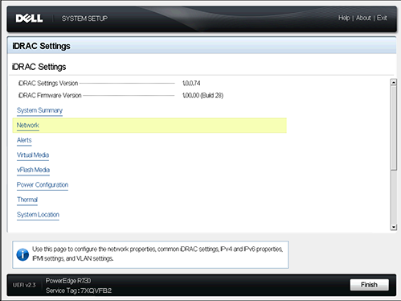
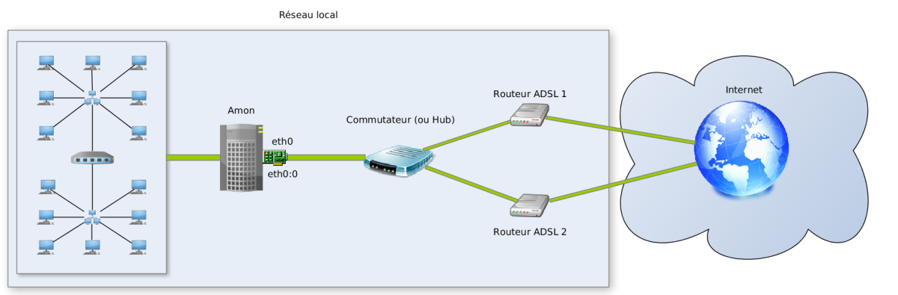
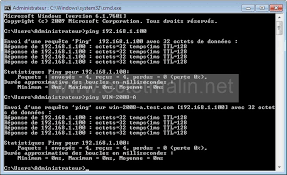

1. Configuration via l’iDRAC
J'ai pu configurer le serveur à distance grâce à l'IDRAC, ce qui m'a permis de gérer le matériel sans avoir à être physiquement présent.

2. Configuration de l'Agrégation
L'étape suivante a consisté à configurer l'agrégation des interfaces réseau pour assurer une meilleure connexion et redondance.

3. Ouverture d'une Porte dans le DNS
J'ai également ouvert une porte dans le DNS pour permettre l'accès aux services hébergés sur le serveur.

4. Transfert des VMs
Enfin, ce serveur va transférer toutes les VMs, centralisant ainsi la gestion des machines virtuelles.